| Via Lucis -- 光の道行: 復活からペンテコストまでのジャーニー Via Lucis - Stations of Light | |
| Nita Ng | |
| UNKNOWN (2013) | |
Via Lucis
--
光の道行
復活 からペンテコストまでのジャーニー
作 者& 画家：ニタ ン
Nita Ng
訳 者 : 美心
Dear friends,
This book is a labor of love and a journey shared.
I share this love offering with everyone. If you would like to order more copies of this book please contact me.
And if the words touched you and enriched your own reflections, please support my work by passing the book forward and please donate generously to me at:
www.RunWaters.blogspot.com/p/donation.html
I give thanks to God and to all those who walked before me,
With me
And ahead of me
Blessings of
Love
Peace
And Joy
To all my friends and readers
Nita Ng
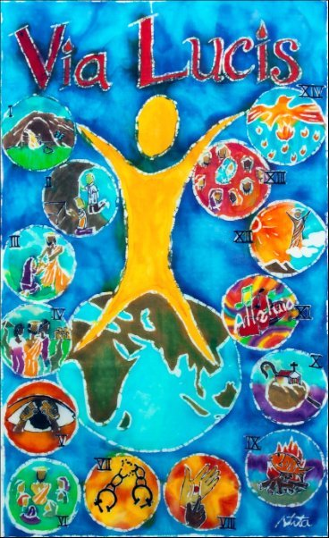
背景
普通、 ローマカトリック教会の中で、最も崇拝されているものはキリストの御受難（パッション）を記述す る ＶＩＡ ＣＲＵＣＩＳ （ヴィ ア- クルシス） ・ 十字架の道である。
しかし、本書ではヴィ ア- ルシス、光の道行によって瞑想をおこなう。それは、聖書物語のイエスの復活からペンテコスで聖霊降臨までの出来事に従うものである。
絵 と詩
絵は従来、コットンに色を塗り、ワックスで描かれていた。このテクニックはバテイッ ク (batik ) とよばれ、そこで使われるワックスは祈祷の時に灯されたロウソクを再度使用したものである。この方法は一度使われたロウソクのワックスをリサイクルでき、また神とのコミュニケーションを感じることもできる。そしてそのローソクのワックスを絵画に使うことで、私たちは神と繋がることができると私は考えている。
イコンは絵も詩も私個人の祈りおよび瞑想がもたらした果実である。それぞれのイメージは私が静寂の中に心に浮かべたものであるが、詩は絵が完成した数ヶ月後のある朝の祈祷のときに、言葉がふと頭に浮かんできた。したがって、本書の絵と詩はすべて神の意図であり、私はただ神に使わされた存在に過ぎない。
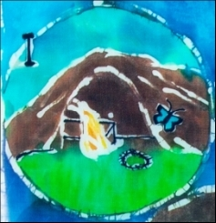
第一節
空 き墓を見つける婦人
マタ イ 2 8： 1−6
どうして？どこへ？なにに？
あの人は消えたのか。
私たちを残していくのか。
それとも私たちのところに向かってくるのか。
もうあの人のことはわからないかもしれない。
おそらく毛虫のように
蝶になって
だんだんとわからなくなる。
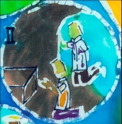
第二節
そこでペテロとヨハネは墓へ向っていった
ヨハネ 2 0： 3−8
あの人はいったいどこにいる？
あの 人はいったい誰だろう？
私 は知っている。
けれど 、また疑問をもつ。
どこにいったのだろう？
かつてあの人はおしゃったことがあるだろうか？
そういうことだろうか？
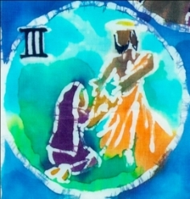
第三節
イエスは彼女に「マリア」といわれた
ヨハネ 2 0： 16
マリア、マリア
あの人が呼んでる。
この声はよく知っている。
愛 しい声である。
あの 人に間違いない。
あなたのもとへ走って行き。
抱きしめられた。
ああ、そうだ。
「ただいま」
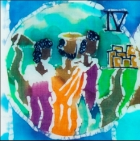
第四節
復活した主はエマオ村に現れる。
ルカ 2 4： 13−27
歩きながら話しあって、
もっと知りたい。
あの人と一緒、ずっと前から
けど 、なぜあの見知らぬ人は私たちより
あの人のことをよく理解できるの？
胸が騒ぐ、
でも理由がわからない。
あの見知らぬ人を誘おう。
仲間になろう。
第五節
パンを取りあげられたとき、それがイエスであることがわかった。
ルカ 2 4： 28-32
目が覚め、
見 えたけれどはっきりしない。
見 ていたかもしれない、でももう見えない。
パンをちぎって、
取って、食べよう！
みんなに伝えて。
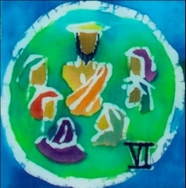
第六節
復活したイエスはエルサレムに現れた
ルカ 2 4： 35-39
周りをみると、
悲しみや、絶望や
わずかな希望ばかりだけど、
最後までやり遂げていく。
それとも逃げるために、
彼らはここに残るのか。
マリアは喜びの光に満たされる！
心の奥に平和がある。
「イエスが見えたわ」
けれど、
多 くの人は
その 話を疑う。
ねえ、ちょっと待って！
ずっとそばにいるのに！
なぜ気づいていなかったの？
お 腹が減っていたみたい。
一生懸命 に食べている。
でも 決して恐ろしいものではないよ。
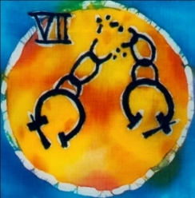
第七節
復活 したイエスは弟子に寛恕の力を広める
ヨハネ 20-22-23
「許す」と「許される」
どちらが 自分の影響を受けるているのか。
自由が欠けた人生は、
いわば手かせをはめられて
監獄 にいる生活だ。
おそらく、両方ともだろう。
おそらく 、自分を許せないとき、
手 かせをかけられたように、
自分 のことを許すことができないだろう。
手かせの錠を開けよう。
鍵 を捨てよう！
そして 、すべてを破壊しなれれば！
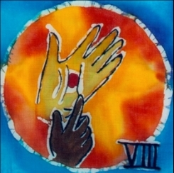
第八節
復活したイエスがトマスの信念を固める
ヨハネ 2 0： 24-29
触ってみて、この釘あとの傷を。
そう、また新しいのよ。
傷つけられたばかり。
なぜ 疑うの。
愛 しいあなたが信じてくれなかったら
他 の人達は信じてくれるのかしら。
でも見なくても信じる人はいるのよ。
山越 え、海渡り、
時間 や空間も乗り越えて
やってくる 人達。
彼らは話を聞く。
彼 らは話を聴いて
信 じるの。
それから、
彼らにとって、
私は存在し、彼らのそばにいるの。
私と彼らの間には
時間 と空間は、
存在 しないのよ。
それは 愛があるから。
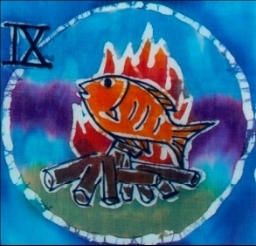
第九節
イエスはテベリアの海辺で弟子たちの前に現れた
ヨハネ 2 1： 1-13
再び彼らに与う。
彼らは他人に与うのか？
信念を持ち、漁の方法を教え
他人 にもこの方法を伝えてやるのか。
私 にとって、それは魚だ。
海、空、 そして陸からきた。
私には
時間 と空間は区別がない。
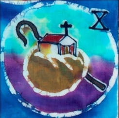
第十節
復活 したイエスはペテロに言う「わたしの羊を飼いなさい」と。
ヨハネ 21:15-17
そう、この先は岩だらけの道である。
岩の上を耕さなけれなばならぬ。
その上に種子を蒔く。
すべては 私のものである。
すべては 与えるべきものだ。
それを 捨てたらすべてのものは死ぬだろう。
第十一節
復活した主は弟子たちを世界中に送る。
マタ イ 28:16-20
愛と平和と喜びのため
歌おう。
叫ぼう。
囁こう。
歌声とその物語、
風や虹とともに広めていこう。
それは 愛と平和と喜びの種。
そのために
人生を生き、
存在を生かすのだ。
それから、
歌 おう。
叫 ぼう。
囁 こう。
もう一度。
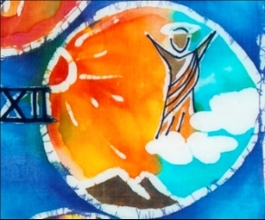
第十二節
復活した主が天国から降臨する。
使徒行 伝 1:9-11
雲の上、
雲 の下、
太陽 と私。
一緒 に輝こう。
空 の小鳥は旅のガイド。
山々はおじぎをしているみたいだ。
この上に、
この下に、
私はあなたと一つである。
私はすべてのものと一つである。
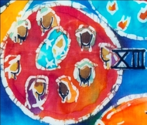
第十三節
マリアとともに上の部屋に待つ
使徒行伝 1： 12−14
マリア、我々の母は
目にずっと写しておきたいほど大切だ。
私のすべてと一緒にいる。
彼女と一緒にずっといよう。
彼女の暖かい光は世界を暖める。
朝の星のように。
夜明けのときも。
世界が眠ってる時も。
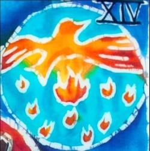
第十四節
復活したイエスは聖霊を送る。
使徒行伝 2： 2−4
燃やそう！燃やそう！
火 の明かりは、
空 に昇り、
空間 を取り囲み、
巻 きこみ、
包みこむ。
そして、
生命のように、
水のように、
ゆっくりと沁みこむ。
そのそばに 連れて行って。
地球に、
そこの人々に、
優しいキスをすることは、
あなたの 歌、
叫 び声、
秘密 の言葉を、
運 ぶ風と虹のようである。
Notes
Notes